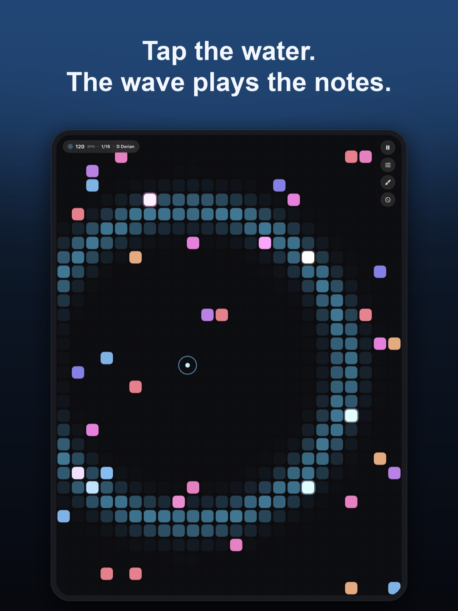
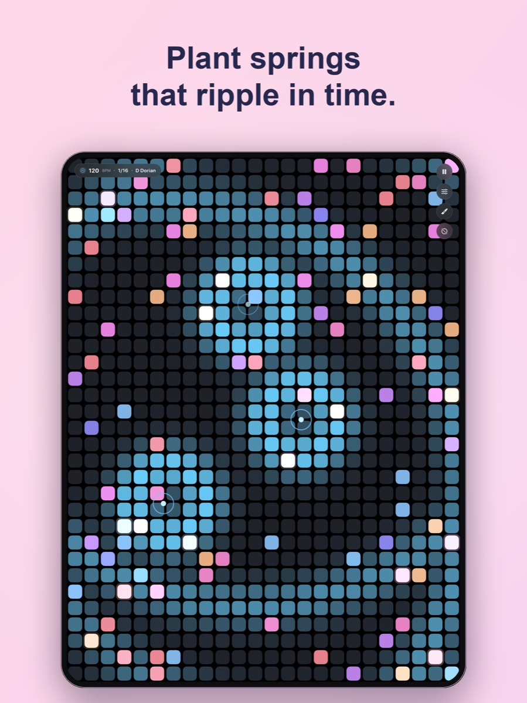
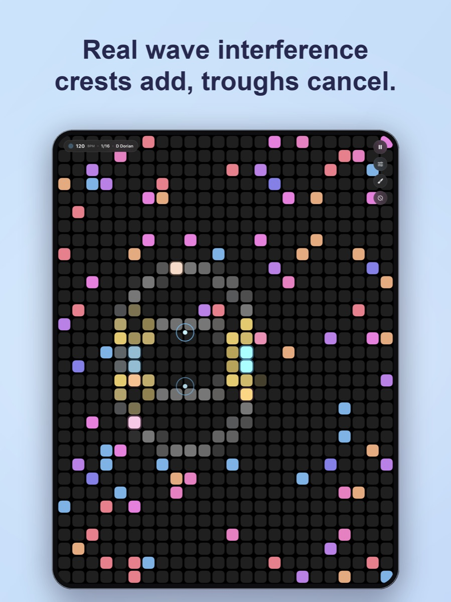
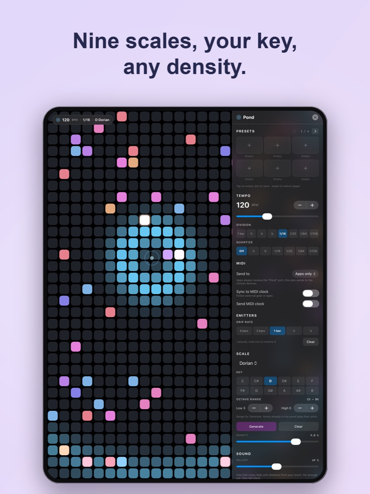

Out now on the App Store
Pond
A ripple sequencer for iPad, built on one idea: drop a stone in the water and let the wave play the notes. Every cell holds a note; when a ripple's wave front crosses it, it sounds. Where you tap and how the waves overlap — that's the composition.




Swipe to see more →
What it does
Waves play the notes
Tap anywhere and a wave expands from your finger, sounding every note it crosses. The moving band of lit cells is the wave — you watch it travel. Several fingers drop several waves.
Real wave interference
Switch it on and ripples become real waves: crests add and troughs cancel, like rings from two stones. Reinforcing waves push a note louder, cancelling waves soften it — drawn in bright cyan and cool slate right across the water.
Plant springs that ripple in time
Hold a finger still for half a second to plant an emitter — a spring that keeps dropping ripples on its own, locked to the tempo. Up to eight, for evolving polyrhythms.
Generate any pond
Nine scales, any key, and an octave range you choose. Generate deals a fresh scatter of in-scale notes at any density — from a whisper-sparse 0.1% up to busy. Tap again for another roll.
Liquid, or locked tight
With quantize off, notes sound the instant the wave touches them — pure water physics. Snap it to ⅛ or 1/16 and the waves stay liquid while the rhythm locks to the grid.
A voice of its own
A soft 16-voice pluck is built in, so Pond sings out of the box. Shape it with falloff and sustain — from rain-like plucks to long washes — or switch it off and drive your favourite synths.
Plays everywhere
Standalone & AUv3, with MIDI in and out
On its own, Pond publishes a "Pond" MIDI source and can send straight to your USB interfaces, hardware synths, and other apps. As an AUv3 MIDI processor it drops into AUM, Logic, Cubasis and friends — the full pond, freely resizable, following the host's tempo and transport. Sync to external MIDI clock, or send it.